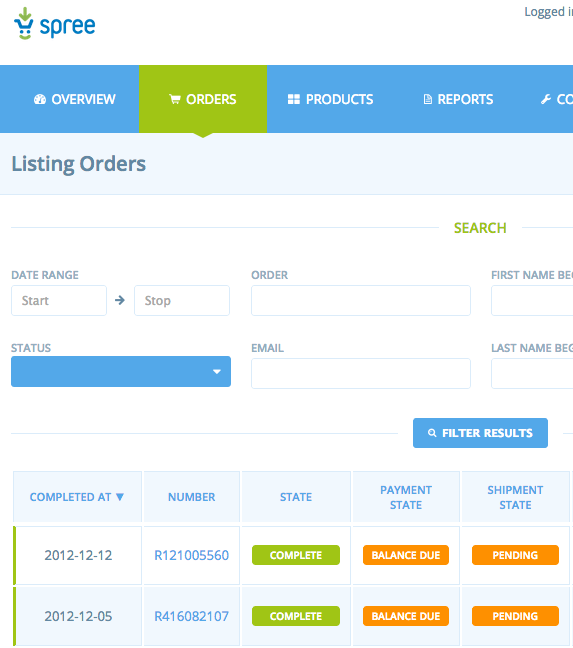

Spree 1.3.0 is the first release of the 1.3.x branch of Spree. This release contains some major non-breaking changes, which are covered in the release notes below.
Due to the long development cycle of Spree 1.3 in parallel with continuing development of the 1.1 branch, there may be bug fixes released in 1.3 that are already present in the latest release of 1.2.
Here’s a quick summary of the major features in this release:
- Admin redesign
- Currency support for variants
Major changes
Admin redesign
Alexey Topolyanskiy has done some amazing work performing a makeover for the admin backend for Spree, something that has been long overdue!

Currency support
Thanks to work by Gregor MacDougall and the team at Free Running Technologies, Spree’s Variant model now is able to keep track of a different price for different currencies.
Minor changes
Remove child node from API responses
The API has previously returned data with a child node within its responses. Take this example from /api/products:
{
[products]() [
{
[product]() {
[id]() 1,
…
}
}]
}
This response will now be returned without the child nodes, like this:
{
[products]() [
{
[id]() 1,
…
}
]
}
API requests can now ask for different Rabl templates
If you would like to make a request to the API use a different Rabl template, pass the template’s name within the request as an X-Spree-Template header or template parameter, and Spree will automatically use that template to render the response.
For instance, if you have a template at app/views/spree/api/products/special_show.v1.rabl, to render that template the X-Spree-Template header or template parameter would need to be simply “special_show”. This will allow you to customize the responses from Spree’s API extremely easily.
Jirafe false positive conversions
We’ve had a number of reports of Jirafe false positive conversions within Spree (#2273 #2211 and #2157)
This issue should now be fixed based on this commit
Other changes
- Fix issue where return authorization form would crash if a variant had an ID with a large value commit
- Don’t process payments if payments are not required #2025
- Payments are now applied one at a time until the order total is met, rather than processing all payments at the same time. #1954 #2008
- Exclude expired promotions from Product#possible_promotions #2058
- Pass all changes to Variant#count_on_hand to Variant#on_hand= to ensure backorders are processed correct commit
- Use select2 for properties and option types on prototype form to display options better. #2077
- Clicking ‘Checkout’ on the cart page will now update the order and redirect to the address form, rather than just redirecting to the address form. #2086
- The searcher class now has access to the current user. #2089
- Allow anonymous requests to the API. commit
- Don’t clear mail method or payment method passwords if they’re not included in a request. #2094
- An order is marked as returned automatically if all return authorizations are received. #1714 #2099
- Added on_demand field for variants, indicating that the variant is an “on demand” item. #1940 #2080
- Product.in_taxons does not return duplicate products commit
- Spree::Product.on_hand no longer sums with deleted variants #2112
- Payment#capture! will no longer work on completed payments. #2119
- Fix “Order adjustments” translation #2123
- Order#create_tax_charge! is called whenever a line item is added or removed from an order. #1418
- Don’t allow void_transaction! to operate on a payment which is already void. #2119
- Strip EXIF data from images #2142
- Display promotion usage data in admin #2193
- Remove display_on option for Payment Methods. #1918
- Add Order#variants, to get a list of variants associated with an order. #2195
- Fix issue when trying to move taxon to the bottom of the tree #2180
- Show only one validation message for an order’s email if left blank on the checkout #2214
- Taxonomies can now be reordered #2237
- Order#merge no longer uses Order#add_variant. For an explanation, see this commit
- Orders with promotions that “zero” the order total will no longer skip delivery step if that step is required. #2191
- Jirafe analytics can now be edited after registration #2238
- awesome_nested_set version has been bumped to 2.1.5 commit
- Order details page no longer errors if a payment’s credit card type is blank #2282
- No longer transition to complete if payment is required and there are payments due. commit
- Refactored preference fetching from the preference store commit
- Order#checkout_steps will now always include the “Complete” step. commit
- Allow “first order for user” promotion to work with guest users as well #2306
- Always show “resend” (email confirmation) button when viewing an order in admin backend. #2318
- Made sure that shipment for resumed order can be set to “ready” #2317